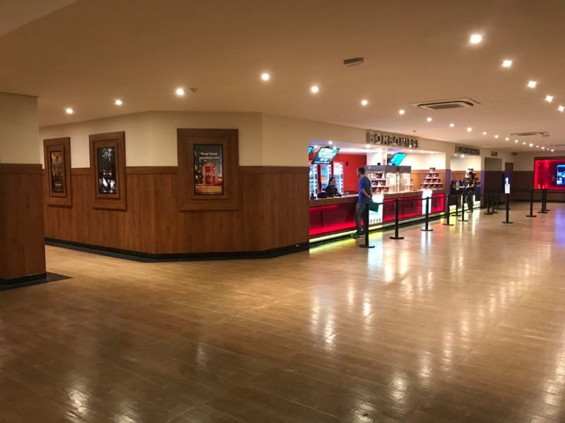

Conheça Santa Bárbara D'Oeste
Ir ao cinema Multiplex
Santa Bárbara D’Oeste possuí dois cinemas e um deles é o Multiplex. Que tem ótimas salas e lançamentos incríveis. Ir ao cinema é um entretenimento que faz bem para o corpo e a mente, que estimula o pensamento e a criatividade e amplia o conhecimento e o vocabulário para assuntos do dia a dia, dos mais corriqueiros até situações de negócios.
Entre no site e confira: Multiplex.
Passar uma tarde de domingo no Parque dos Jacarandás

O parque é ótimo para praticar atividades físicas como corrida, caminhada e circuito funcional. Tem duas academias ao ar livre, quadra de vôlei de areia e pista para bicicleta. Também é agradável para levar crianças, passear com amigos e família.
Descubra mais sobre o Parque dos Jacarandás pesquisando no google sobre o local.
Conheça o novo Parque Taene

O novo parque é mais interativo. Ele tem fonte de água que as crianças podem entrar e brincar. Ótimo para passear com a família.
Veja no mapa onde fica o local.